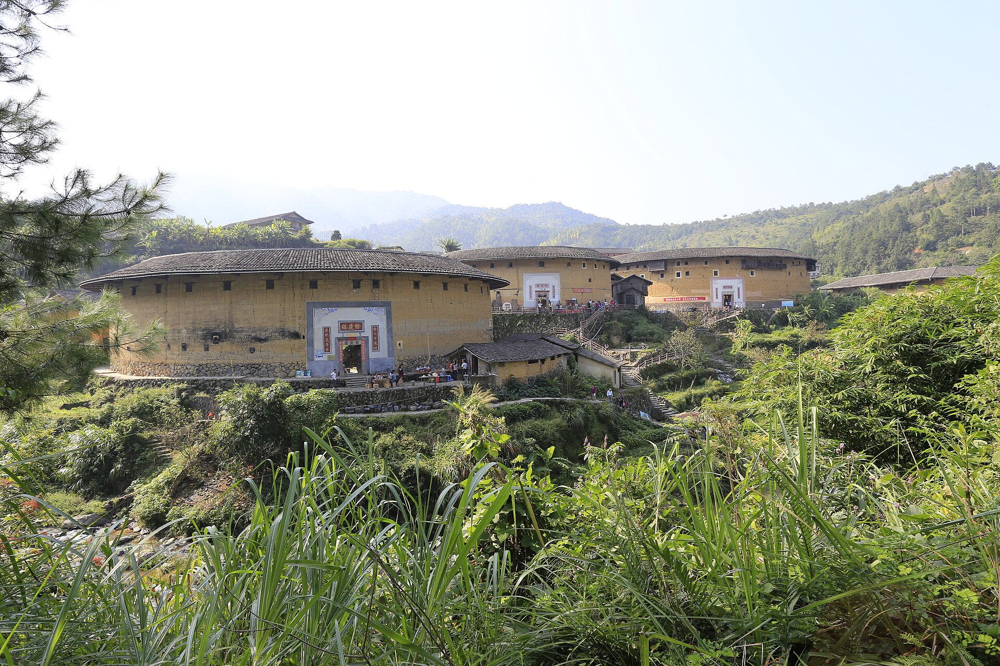
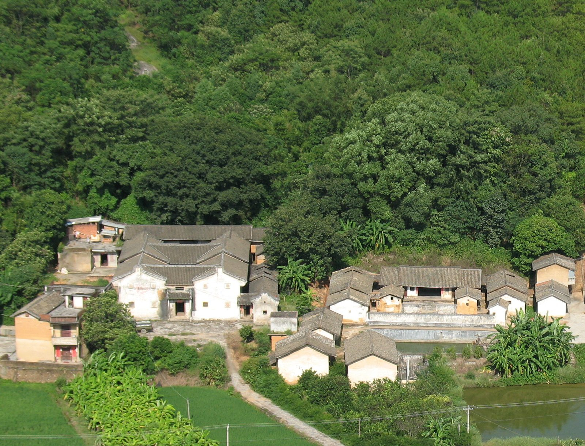

花萼楼
三环相围，夯土为墙。楼内的天井只落自己的雨，四百年来声息相通。

世界客都 · 广东梅州
一座城的千年书声，与一个学子的百年对话
壹
「处处为客，四海为家。」
他们把中原的读书声，一路背进了南方的群山。
迁徙地图加载中……
迁徙路线为示意，据客家迁徙史通行表述简绘；点击上方阶段或等轮播翻页，地图与故事同步。
注：「播迁四海」一段配图为梅州老街骑楼（下南洋场景示意）。
五次跋涉，山把他们围起来，
他们把家安进山里——称自己为「客」。
贰
泥土砌成的家书，一封写了千年。
前塘后屋，天圆地方，一围之内就是一族。

「取土挖塘」— 半月池塘聚水为鉴
客家围龙屋
名人故居（旧居）
国家级传统村落
各级文物保护单位
三环相围，夯土为墙。楼内的天井只落自己的雨，四百年来声息相通。
以石筑墙，方正如印。名字里那一个「安」字，是迁徙民族最朴素的心愿。
下南洋的侨商寄回银钱，建起这座九厅十八井的围屋，「又庐」二字，是故土难离。
注：圆楼、村落两张配图为同类形制示意，泰安楼为实景拍摄。
叁
围屋的上堂，白日祭祖，夜里读书。
一族的书声，就是一个家族的运气。
「地瘦栽松柏，
—— 客家祖训
家贫子读书。」
在梅州的山间，最气派的建筑常常不是祠堂，而是学堂。客家人把迁徙路上唯一的行李——读书的传统——供进了围屋：上堂是祖厅，也是蒙馆；楹联劝学，比门神更常换新。
「一腹三翰院」的故事在大埔流传了三百年：一位客家母亲生下的三个儿子先后入翰林院。科举时代，梅州科甲连绵；近代以来，「文化之乡」「华侨之乡」「足球之乡」三块牌子，依然挂在城市门口。
清乾隆年间建的书院。1903 年，返乡的黄遵宪筹资将其改为东山初级师范学堂，喊出「兴邦之策，莫善于兴学」——十年后东山中学在此创办，叶剑英元帅的少年书桌就摆在这里。
「我手写我口」的晚清诗人与外交家，晚年归梅州筑人境庐——客家人读书，读进了家国。
肆
梅州拥有客家山歌、广东汉剧、埔寨火龙等 7 项国家级非遗，
各级代表性项目 420 项、传承人 473 位。这一章，请你把耳朵也打开。
中原古韵的南方变奏，客家人「心灵家园」的文化象征。2026 年客家（梅州）非遗周的舞台上，经典童谣《月光光》再度回荡梅江夜空——它也是几乎每个客家人学会的第一支歌。
旧称「外江戏」，源自大埔，被誉为「南国牡丹」。中州官话唱念，西皮二黄开腔，2008 年列入国家级非遗名录。
♪ 音频未收录 · 等一段汉剧唱腔竹篾扎龙、裱纸彩绘。元宵之夜，丰顺埔寨的火龙在漫天火星中翻腾起舞，火花四溅，赤膊的舞龙人把一整年的祈愿点着。
✦ 影像未收录 · 等一场火龙现场| 项目 | 类别 | 批次 | 保护单位 |
|---|---|---|---|
| 梅州客家山歌 | 传统音乐 | 第一批 · 2006 | 梅州市文化馆 |
| 广东汉乐 | 传统音乐 | 第一批 · 2006 | 大埔县文化馆 |
| 龙舞（埔寨火龙） | 传统舞蹈 | 第二批 · 2008 扩展 | 丰顺县文化馆 |
| 狮舞（席狮舞） | 传统舞蹈 | 第二批 · 2008 扩展 | 梅江区文化馆 |
| 木偶戏（五华提线木偶） | 传统戏剧 | 第二批 · 2008 扩展 | 五华县提线木偶传习所 |
| 广东汉剧 | 传统戏剧 | 第二批 · 2008 | 广东汉剧传承研究院 |
| 竹板歌 | 曲艺 | 第五批 · 2021 | 兴宁市文化馆 |
逐项对照国务院公布文件（国发〔2006〕18号 / 〔2008〕19号 / 〔2021〕8号）与中国非物质文化遗产网数据库，2026-11-11 查阅。
月光光，秀才郎；骑白马，过莲塘。
莲塘背，种韭菜；韭菜花，结亲家。
伍
一桌一席，是迁徙的乡愁最具体的形状。
梅州八个县区，桌桌各有各的味道。
梅州人的清晨从一碗猪油蒜香开始，拌到根根发亮——这叫「食朝」。
猪肝、瘦肉、粉肠滚成一盅，讨个「状元及第」的彩头——相传源自蕉岭，一碗汤里全是读书人的讲究。
粗盐埋住整鸡，焗出琥珀色的咸香——行囊里的干粮，变成了宴席上的招牌。
梅州菜干吸饱肉汁，肥肉蒸得透亮。下饭的一口，是客家人过日子的一口。
相传客家人南迁到兴宁、五华一带，念着北方的饺子，就把肉馅酿进了豆腐里。
糯米酿造，月子里的母亲必饮；一锅娘酒煮鸡，是最暖的月子菜。
芋泥捏成算盘珠，和肉末香菇同炒——把它炒进菜里，也把精打细算炒进日子里。
米浆搓成两头尖的小粄，形似鼠仔而得名——滚汤、捞炒皆滑溜弹牙，大埔人的心头好。
饼皮薄得透光，卷入肉丝、豆干与海味——百侯人家待客的功夫菜。
米浆蒸成薄皮，捆住豆干、韭菜与瘦肉——丰顺人的早餐，客家人的「春卷」。
禾米染成金黄，捶打再蒸——蘸糖吃甜、切片炒着吃香，平远人过年的颜色。
相传始于明朝的烧酒坊，粤东名酒——客家人席上的一口烈性，敬远客，也敬岁月。
鲜鲩现切，薄可透光，拌上姜丝花生入口即化——五华人待客的至鲜一课。
入伏的消暑甜品，仙草熬成，乌黑透亮带着草香——客家人自己的「天然凉茶」。
春天的笋切丁爆香，裹进软糯的粄皮——梅州人管米食都叫「粄」，一个字里有整座山的物产。
注：薄饼、捆粄、黄粄、长乐烧、鱼生、三及第、娘酒、笋粄等配图为同类菜式或器物示意，其余菜品为实拍。
注：「𠊎」是客家人为「我」造的形声字——若你的设备把它显示成方框，恰好说明这场正名还在路上。
陆
同样是过年过节，梅州各县各乡各有各的过法——
丰顺的火龙、兴宁的花灯、乡下的月半。你家的节，是怎么过的？
火龙出巡，全村倾巢。人在火星里追着龙跑，龙在星光里翻腾——一夜的烟火，烧掉一年的晦气，祈来一岁的风调雨顺。
上年添了新丁的人家，正月里到祖祠「上灯」——一盏花灯挂上祖宗牌位前，一条新血脉写进族谱。兴宁的上灯最热闹，全村吃灯酒。
客家人把七月节叫「过月半」，接祖先回家吃饭。各县各乡的日子、吃食不尽相同——问一问家里老人，你家的月半是哪一天？
煎好甜粄，挂在门梁屋顶「补天穿」——纪念女娲补天的日子，也提醒农闲将尽。一块甜粄，是客家人的浪漫。
注：节庆配图均为同类民俗场景示意（香火龙、花灯、祠堂祭祖、年糕）——埔寨火龙与兴宁上灯暂无开放版权专拍，等你回梅州实拍替换。
山有多深，日子就有多少种过法。
柒
客家人相信：书声不熄，家族不散。
一百年前，另一群人在广州点燃了同一炉薪火。
客家先民五次迁徙，把家安进群山；
这所大学七度迁徙，把书声背过烽火。
围屋上堂设蒙馆，祠堂楹联劝学，宗族供子弟读书
新学入梅，学堂书院遍布山间城乡
获评「东亚文化之都」，建成国家级客家文化（梅州）生态保护区
陈炳权等创办私立广州大学，「博学笃行」由此立训
抗战烽火中七度迁徙办学，弦歌不辍
五校合并，组建新的广州大学
建校一百周年，百年薪火，赓续华章
我从围屋的山门，走进大学城的校门。
两个百年，在同一个书桌上相遇——
客家人的书声，原来从未换过调。
—— 一个在广州大学读书的客家学子
留言仅保存在本机浏览器（localStorage，本页无服务器、不会公开）——想把它带走，去下面的「名片工坊」做成名片。